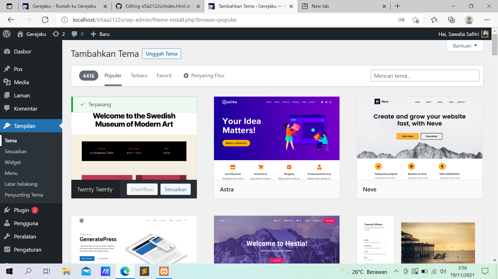
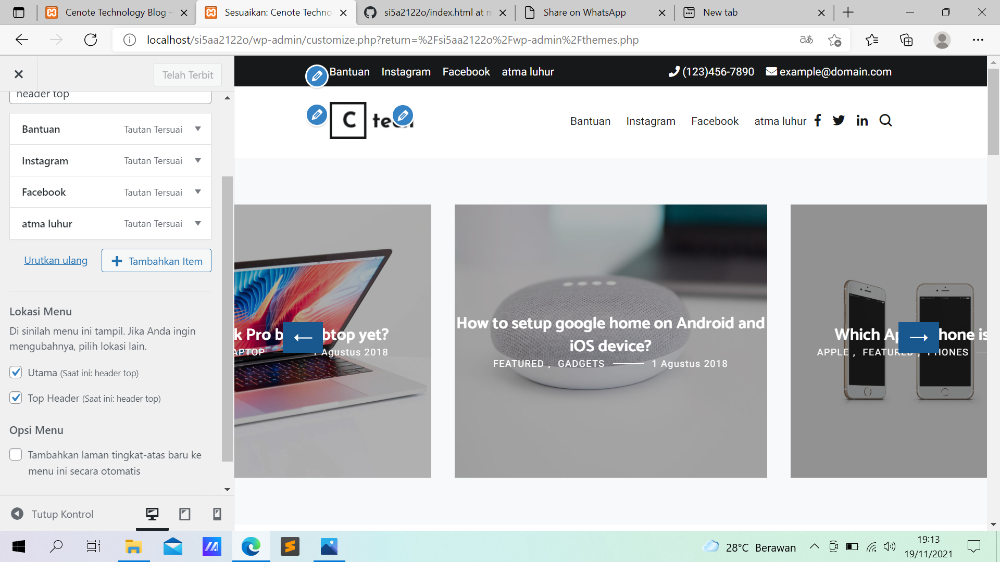
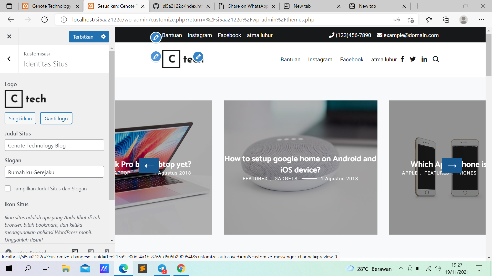
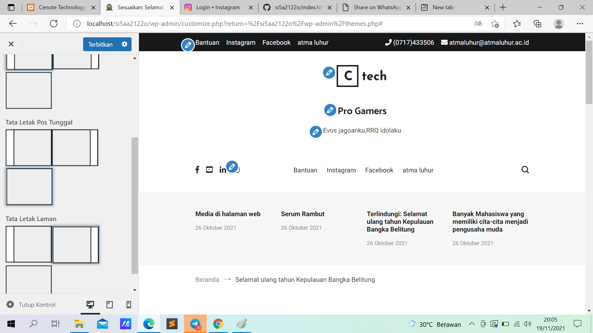

NIM: 1922500190
Nama:Ernita Resva Julina
Kelompok:SI5A
kesimpulan atau hasil pertemuan 5 yang saya ambil adalah:
- Cara Instal Tema:
- 1. Langsung online https://wordpress.org/themes/
- 2. Semi Online. Unggah file zip tema
- 3. Pindahkan folder tema
- klik tampilan. pilih tema terus klik pojok atas tambah baru dan pilih tema yang di inginkan klik instal
Berikut tampilan halaman tambah tema baru:

Berikut tampilan halaman custom menu tema :

Berikut tampilan halaman custom Logo :

Berikut tampilan halaman custom layout :
